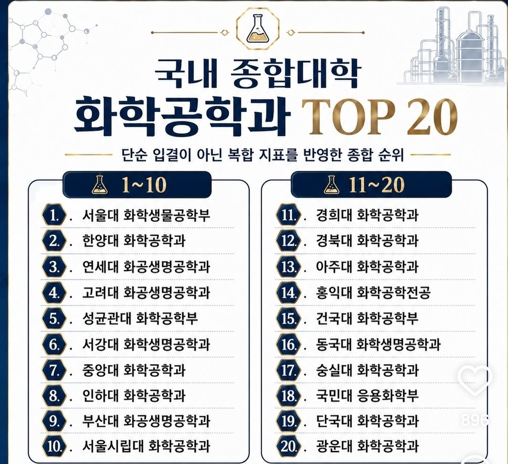

용인 수지고 · 신봉고 · 용인홍천고 · 성복고 · 서원고 | 2026학년도 입학생 교육과정 편제표 기준, 2027학년도 입학생은 수지고·용인홍천고·서원고만 추가 (학교알리미 공시 파일, 진학지도서)
* 표시는 2028학년도 수능 필수 출제 과목이 아닌 과목입니다. 필수 과목은 국어(화법과 언어, 독서와 작문, 문학), 수학(대수, 미적분Ⅰ, 확률과 통계), 영어Ⅰ·Ⅱ, 한국사, 통합사회, 통합과학입니다. 공통국어·공통수학·공통영어는 모든 학생이 1학년에 이수하므로 *를 붙이지 않았습니다. 제2외국어·한문은 선택 응시라 *를 붙였습니다.
개편수능(필수) 표시는 2028학년도부터 바뀐 개편 수능(2022 개정)의 필수 출제 과목입니다. 국어 화법과 언어·독서와 작문·문학, 수학 대수·미적분Ⅰ·확률과 통계, 영어Ⅰ·Ⅱ, 한국사, 통합사회, 통합과학이며, 선택과목은 제2외국어/한문(개편수능(선택))뿐입니다. 미적분Ⅱ·기하와 물리학·화학·생명과학·지구과학은 수능 범위가 아니고, 대학이 권장하는 경우가 많아 대학 권장 과학(**)으로 따로 표시합니다.
2028학년도 수능 개편안(교육부) 기준입니다. 국어·수학·사회·과학(직업) 영역은 선택과목 없이 모든 수험생이 같은 과목을 봅니다. 영어·한국사·제2외국어/한문은 절대평가이고, 제2외국어/한문만 골라서 봅니다. 2028 수능은 2025학년도 입학생부터 치릅니다.
| 영역 | 개편안(2028 수능~) |
|---|---|
| 국어 | 공통 화법과 언어개편수능(필수) 독서와 작문개편수능(필수) 문학개편수능(필수) 현행(~2027 수능): 공통(독서·문학) + 선택 1(화법과 작문 / 언어와 매체) |
| 수학 | 공통 대수개편수능(필수) 미적분Ⅰ개편수능(필수) 확률과 통계개편수능(필수) 현행(~2027 수능): 공통(수학Ⅰ·Ⅱ) + 선택 1(확률과 통계 / 미적분 / 기하) |
| 영어 | 공통 영어Ⅰ개편수능(필수) 영어Ⅱ개편수능(필수) 현행(~2027 수능): 공통(영어Ⅰ·Ⅱ) · 절대평가 |
| 한국사 | 공통 한국사개편수능(필수) 현행(~2027 수능): 공통 · 절대평가 |
| 탐구 (사회·과학) | 사회 통합사회개편수능(필수) 과학 통합과학개편수능(필수) 현행(~2027 수능): 17과목 중 최대 2과목 선택 |
| 직업탐구 | 공통 성공적인 직업생활개편수능(필수) 현행(~2027 수능): 1과목 선택(5과목 중 택1) / 2과목 선택(성공적인 직업생활 + 택1) |
| 제2외국어 /한문 | 9과목 중 택1 독일어Ⅰ개편수능(선택) 프랑스어Ⅰ개편수능(선택) 스페인어Ⅰ개편수능(선택) 중국어Ⅰ개편수능(선택) 일본어Ⅰ개편수능(선택) 러시아어Ⅰ개편수능(선택) 아랍어Ⅰ개편수능(선택) 베트남어Ⅰ개편수능(선택) 한문Ⅰ개편수능(선택) 현행(~2027 수능): 9과목 중 택1(같음) · 절대평가 |
학교와 입학년도를 체크해 비교합니다. 하나는 항상 남아 있어야 하고, 이름을 끌어서 순서를 바꿀 수 있습니다. 2027학년도는 수지고·용인홍천고·서원고만 있고, 신봉고는 2026 이미지가 없어 학교 PDF 기준입니다. 한눈에 보기와 과목별 개설 비교도 같은 선택(학교·입학년도)과 순서를 따릅니다. 대학별 판정은 2026학년도 자료 기준입니다.
선택 과목 수는 편제표에서 계산한 값입니다. 총 이수학점은 다섯 학교 모두 174학점입니다.
전공(학과) 이름을 입력하면 그 전공을 모집하는 대학과 권장과목이 나옵니다. 대학을 누르면 아래 "대학·학과별 유리한 과목"과 과목별 개설 비교 표에 권장과목이 표시됩니다.
대학·모집단위별로 권장하는 과학 과목만 모았습니다. 개편 수능(2028학년도~)에는 과학 선택과목이 없어서 수능 범위는 아니지만, 대학이 이수를 권장하는 과목입니다. 입력된 대학 자료(12개 대학) 기준이며, 과학 권장이 없는 모집단위는 제외했습니다. 출처는 각 행 아래에 적었고(진학지도자료집, 연세대 2028 가이드라인), 최종 확인은 대학 입학처 공지로 하세요.
개편 수능(2028학년도~)은 대수·미적분Ⅰ·확률과 통계만 출제해 미적분Ⅱ와 기하가 빠집니다. 그래도 아래 수도권 대학은 권장과목 또는 논술 출제범위로 이 두 과목을 요구하거나 시사합니다. 가산점이나 필수 조건이 아닐 수 있으니 최종 모집요강으로 확인하세요.
권장 수학이 표에 없는 대학: 건국대와 이화여대는 자료집에 모집단위별 이수 권장 과목이 없고 논술 출제범위만 있어 아래 2번 표에 넣었습니다. 성균관대는 2028 시행계획·2027 모집요강에서 권장·핵심 과목을 지정하지 않아 3번 표에 수학 관련 반영 내용을 따로 정리했습니다. 연세대 인문·사회·통합 계열도 전공연계과목을 제시하지 않았습니다.
| 대학 | 수리논술 출제범위 |
|---|---|
| 경희대 의·약학계 | 공통수학1·2, 대수, 확률과 통계, 미적분Ⅰ, 미적분Ⅱ수능 밖 기하수능 밖 |
| 동국대 자연계열 | 경희대 의·약학계와 같은 범위(공통수학1·2, 대수, 확률과 통계, 미적분Ⅰ·Ⅱ, 기하) |
| 연세대 자연·통합계열 | 고교 교육과정(2022 개정) 보통 교과 전체(융합 선택과목 제외). 미적분Ⅱ·기하·통합과학까지 나올 수 있어 3합 6 수능최저가 2028 대입부터 새로 생김 |
| 한양대·동국대·경희대 | ‘고등학교 교육과정 전 범위’로 안내해 미적분Ⅱ·기하 포함 가능성이 있음 |
| 건국대 | 2026 대입 자연계 논술: 수학, 수학Ⅰ·Ⅱ, 미적분, 확률과 통계, 기하수능 밖 포함(건국대 자연). 통합형은 수학·수학Ⅰ·Ⅱ만. 2028 대입에서는 논술을 통합형 한 가지로 일원화해 범위 확인이 필요함 |
| 이화여대 | 2026 대입 자연계 논술: 수학, 수학Ⅰ·Ⅱ, 미적분, 확률과 통계, 기하수능 밖 포함. 2028 범위는 자료집에 없음 |
| 전형 | 수학 관련 내용 (2027학년도 모집요강) |
|---|---|
| 수리논술 | 수학, 수학Ⅰ, 수학Ⅱ에서 3문제 (100분). 미적분Ⅱ·기하는 범위에 없음 |
| 2026학년도 수리논술 기출 (수리형 1·2·3교시)제공 PDF 기준 | 교시마다 3문제(배점 30·40·30 또는 30·30·40), 각 문제는 소문항 ⅰ~ⅲ이며 100분입니다. 다룬 내용은 정적분과 넓이, 극대·극소와 미분가능, 우극한·좌극한과 연속, 직선과 곡선의 교점 개수, 등차수열, 사인·코사인법칙, 원과 접선, 삼차방정식으로 모두 수학, 수학Ⅰ, 수학Ⅱ 범위였습니다. 문제지에서 미적분·확률과 통계·기하를 따로 요구하는 문항은 찾지 못했습니다. 다만 수식이 텍스트로 깨져 수리형 1교시 문제2와 3교시 문제3은 이미지로 확인했고 나머지는 문장 중심으로 분류했으니 풀이 단계의 세부 과목은 확인 필요입니다. |
| 2026학년도 과학인재 면접 수학 | 1교시 수학은 삼각형의 외분점·외접원·평행 조건을 코사인과 변의 길이로 나타내고 포물선 위의 점으로 구체화하는 문제였습니다(답변 3분). 2교시 수학은 조건을 만족하는 순서쌍의 개수를 구하는 문제였습니다. |
| 과학인재 면접자연과학·공학계열 등 | 제시문 기반 수학/과학 교과형 면접. 수학은 수학, 수학Ⅰ·Ⅱ, 미적분 확률과 통계 기하에서 출제 |
| 정시 수능 반영공학계열 나군 / 자연과학계열 가군 | 공학계열(나군)은 국어·수학 중 우수한 영역 순 45·30, 자연과학계열(가군)은 수학·탐구 중 우수한 영역 순 40·30 반영. 사회과학계열·의상학과·경영학과·글로벌경영/경제학과는 미적분 선택자에게 가산점(최대 3%) |
성균관대는 2028 시행계획·2027 모집요강에서 모집단위별 권장·핵심 과목을 지정하지 않았습니다. 위 항목은 2015 개정 과목으로 치르는 2027학년도 기준이라, 미적분 선택 가산점은 선택과목이 없어지는 개편 수능(2028학년도~)에는 그대로 적용되지 않습니다. 2027년 입학생이 치르는 입시 기준은 성균관대 입학처 공지로 확인하세요.
출제범위는 각 대학의 2028학년도 전형계획 기준이며 바뀔 수 있습니다. 2026 대입 대학별 범위는 아래 ‘대학·학과별 유리한 과목’의 참고 항목에 있습니다.
| 대학 | 정시 수학 | 정시 과학탐구 | 그 밖의 수학 관련 |
|---|---|---|---|
| 서울대 | 미적분 또는 기하 지정 (이공계, 식품영양·의류·간호 제외) | 사탐 불인정. 과탐Ⅱ 선택 가산점(서로 다른 Ⅰ·Ⅱ 3점, Ⅱ 두 과목 5점) | |
| 연세대 | 지정 없음 (확률과 통계도 가능) | 사탐·과탐 모두 인정, 과탐 가산점 3% | |
| 고려대 | 지정 없음 | 사탐·과탐 모두 인정, 과탐 가산점 3% | |
| 성균관대 | 지정 없음. 공학계열(나군)은 국어·수학 중 우수한 영역 순 45·30 반영 | 사탐·과탐 모두 인정, 과탐 가산점 최대 5% | 수리논술 수학Ⅰ·Ⅱ 3문제, 과학인재 면접에 수학(미적분·확률과 통계·기하)·과학 |
| 한양대 | 지정 없음 | 사탐·과탐 모두 인정, 과탐 가산점 있음(수치는 수능 후 결정) | 논술은 ‘고교 교육과정 전 범위’로 안내 |
| 경희대·중앙대·이화여대·서강대·서울시립대 | 지정 없음 | 사탐·과탐 모두 인정. 가산점은 경희대 과목당 4점, 중앙대 5%, 이화여대 최대 6%, 서울시립대 3%, 서강대 없음 | 경희대 논술(의·약학계)은 미적분Ⅱ·기하 범위, 건국대(자연)·이화여대 논술은 미적분·확률과 통계·기하 포함(2026 대입) |
2027학년도 입시는 현행(2015 개정) 수능이라 수학은 확률과 통계·미적분·기하 중 택1, 탐구는 사탐·과탐 선택입니다. 서울대만 이공계에서 미적분 또는 기하를 필수로 지정했고, 서울 주요 대학 대부분은 지정을 없앴습니다. 나머지 수도권 대학의 최종 요건은 2027학년도 모집요강으로 확인하세요(성균관대는 올려 주신 요강 기준).
수도권 대학의 화학공학 계열 권장 과목과, 위 ‘비교할 고등학교’에서 선택한 학교의 개설 여부입니다. 자료에 권장 과목이 없는 대학은 빈칸으로 두었습니다.
| 대학 (학과) | 수학 권장 | 과학 권장 |
|---|---|---|
| 서울대 공과대학 | 기하, 미적분Ⅱ | 자료에 없음 |
| 연세대 화공생명공학부 | 기하, 미적분Ⅱ | 화학(일반선택) + 진로선택 과학 3과목 이상(서로 다른 과목) |
| 고려대 화공생명공학과 | 미적분Ⅱ, 기하 | 자료에 없음 |
| 동국대 공과대학 | 대수, 미적분Ⅰ·Ⅱ, 확률과 통계, 기하, 인공지능 수학 | 자료에 없음 |
| 성균관대 화학공학부 | 지정 없음 (논술 수학Ⅰ·Ⅱ, 과학인재 면접에 미적분·확률과 통계·기하) | 지정 없음 |
○ 필수로 개설 · △ 선택과목으로 개설 · − 편제표에 없음 (숫자는 학년-학기). 화학 외 ‘물질과 에너지’·‘화학 반응의 세계’가 화학공학과 가장 가깝다는 것은 대학이 지정한 것이 아니라 정리한 사람의 판단입니다. 개편 수능은 통합과학만 출제하므로 이 과목들은 수능이 아니라 이수 권장입니다. 출처는 위 ‘대학 권장 수학·과학’ 표와 같습니다.
A표 출처: 종로학원 분석 보도(2026.4, 파이낸셜뉴스·대전일보), 한국경제 ‘주요대 입시와 사탐런’(2026.4), 성균관대 2027학년도 모집요강. 언론 보도 기준이며 모집요강 원문과 대조하지 못했습니다.
수도권 대학을 고르면, 그 대학이 권장하는 과목을 학교별로 얼마나 들을 수 있는지 보여 줍니다. 2·3학년 편제표 기준입니다.
미적분·확률과 통계·기하 모두 포함: 건국대(자연), 경희대, 고려대, 고려대(세종)(약학), 동국대, 서강대, 서울시립대, 이화여대, 연세대(미래)(의예), 중앙대, 한양대, 홍익대
미적분 포함, 기하 제외: 가천대(의예), 가톨릭대, 국민대, 덕성여대(약학), 동덕여대, 서울과학기술대, 세종대, 성신여대, 숙명여대, 숭실대, 아주대, 연세대(미래), 인하대, 한국항공대(자연) 등. 광운대와 가톨릭대(의예·약학)는 확률과 통계도 포함합니다.
수학·수학Ⅰ·수학Ⅱ만: 가천대, 강남대, 건국대(통합), 경기대, 삼육대, 상명대, 서경대, 서울여대, 성균관대, 수원대, 한국공학대, 한국외대 등
이 범위는 2015 개정 과목 기준이라 2028학년도 이후에는 바뀔 수 있습니다. 위 목록은 일부이며 전체는 각 대학 모집요강을 확인하세요.
자료집에 실린 대학과 모집단위만 들어 있어 전체 대학을 다루지는 않습니다. 권장과목은 가산점이나 필수 조건이 아닐 수 있으니 최종 모집요강으로 확인하세요. 칸의 ✓ 표시는 개설 여부이고, 선택 과목은 같은 묶음 안에서 학생이 고르는 수에 제한이 있습니다.
※ 2학년 선택과목의 물리학·화학·생명과학·지구과학이나 3학년 선택과목은 통합과학과는 별개의 선택 과목입니다. 이 과목들은 수능 필수가 아니어서 *가 붙습니다. 다만 의약학·공학 계열은 대학이 권장과목으로 지정하는 경우가 많습니다. 위 체크박스를 켜면 과학 선택과목은 **(대학 권장 과학)으로 표시됩니다.
같은 학교의 2026학년도 입학생과 2027학년도 입학생 편제표를 과목마다 비교합니다. 지금은 수지고·용인홍천고·서원고만 두 해 자료가 있습니다.
칸에는 그 과목이 편성된 학기가 표시됩니다. 지정 과목과 선택 과목을 모두 포함하며, 선택 과목은 묶음 안에서 학생이 고릅니다.
출처: 각 학교가 학교알리미에 공시한 2026학년도 교육과정 계획서의 편제표
제공해 주신 ‘국내 종합대학 화학공학과 TOP 20’ 이미지의 대학·학과 순서입니다(복합 지표 종합 순위, 이미지 출처는 확인하지 못했습니다). 모집요강을 올려 주신 대학은 아래 상세 보기로 열리고, 나머지는 보도 자료에서 확인된 항목만 적었습니다. 빈칸 ‘확인 필요’는 요강이 없어 정리하지 못한 것입니다. 모집 방식은 처음부터 학과(학부)로 뽑는지, 계열로 뽑아 2학년에 학부/학과로 나누는지를 나타냅니다.

* 표시는 논술 PDF가 첨부된 대학(모집단위)입니다. 모집인원은 2027학년도 기준이며 서울대·인하대 등 ‘확인 필요’는 공개 자료를 찾지 못한 것입니다. 모집인원 출처: 연세대 2027학년도 입학전형 시행계획, 고려대 2027학년도 수시모집요강, 서강대·서울시립대 2027학년도 대학입학전형계획, 중앙대 2027학년도 정시모집요강, 부산대 2027학년도 수시 경쟁률 페이지(진학어플라이), 성균관대·한양대 모집요강. 수시 인원은 정원내 합계이며 고려대 재직자전형처럼 인원이 따로 없는 전형은 제외했습니다. 기타 출처: 한국경제 ‘논술전형의 수시 최저 반영 등’(2026.6)의 2027학년도 자연계 논술 수능최저, 한국경제 ‘주요대 입시와 사탐런’(2026.4)의 2027학년도 정시 탐구·가산점, 종로학원 분석 보도(2026.4)의 수학 지정 현황, 성균관대·한양대 2027학년도 모집요강. 보도 기준이라 각 대학 모집요강 원문과 대조하지 못했습니다. 논술 수능최저 숫자는 탐구 반영 과목 수가 대학마다 다릅니다.
올려 주신 모집요강에 있는 대학만 정리했습니다. 지금은 성균관대(2027학년도 수시·정시 모집요강)만 들어 있고, 다른 대학은 요강을 올려 주시면 같은 형식으로 추가합니다. 모집단위와 인원은 대학 사정에 따라 바뀔 수 있으니 입학처 공지로 확인하세요.